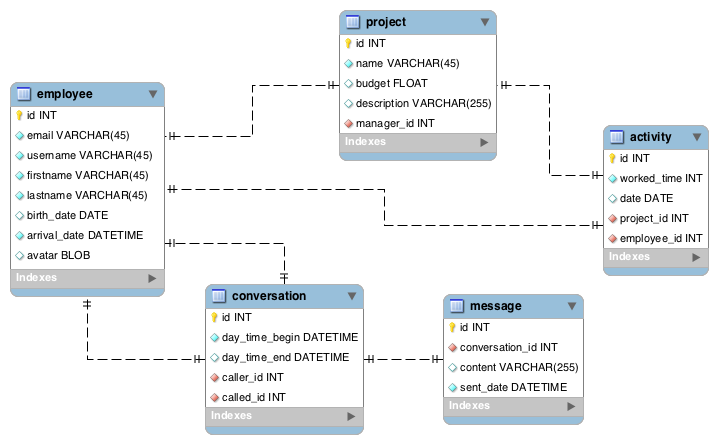

Le projet
Réaliser une application de gestion de projet et messagerie en utilisant les technologies Java EE.
Le projet
Fonctionnalités - Gestion de projet
- Ajouter un utilisateur
- Afficher la liste des utilisateurs
- Ajouter une activité
- Ajouter un projet
- Afficher les projets
Le projet
Fonctionnalités - Messagerie
- Créer des conversations
- Terminer des conversations
- Envoyer des messages
- Utilisation de JMS
Les tâches
Première partie
- Choix de l'architecture
- Création intiale du projet
- Configuration des machines
- Création de la base de données
- Création du dépot GIT
Les tâches
Deuxième partie
- Réalisation de la partie gestion de projet
- Damien, Jérémy et Nicolas
Les tâches
Deuxième partie - bis
- Réalisation de la partie messagerie
Les tâches
Détails de la réalisation
- Une fonctionnalité par personne
- Parallélisation des tâches
L'architecture
- Un projet EAR contenant
- un JPA : représentation de la base de données (Modèle)
- un EJB : contact le JPA (Controlleur)
- un WEB : permet le lien entre l'utilisateur et le controleur
L'architecture
Modèle de données :

L'architecture
Annotation utilisées
- @ManagedBean : Objet dont le cycle de vie est gérer par un conteneur
- @Inject : Récupérer un BeanManager ou le créer
- @EJB : Récupérer un EJB ou le créer
- @RequestScoped : Objet visible du début à la fin de la requête
- @ApplicationScoped : Objet visible par tous les clients utilisant l'application tant que l'application est active
- @Stateless : Objet détruit à chaque nouvelle requête
Fonctionnalités réalisées
Fonctionnalités réalisées
- Ajouter un utilisateur
- Afficher la liste des utilisateurs
- Ajouter un projet
- Afficher la liste de projets
- Ajouter une activité
- Afficher la liste des activités
Fonctionnalités non réalisées
Changement d'organisation radical
- Tous sur la partie gestion de projet
Fonctionnalités non réalisées
- Créer/terminer des conversations
- Envoyer des messages
- Éditer un projet
- Supprimer un projet
Difficultés rencontrées
Liées à la configuration du projet
- Connexion à la base de données
- Différences de JDK
- Problèmes de configuration divers
Difficultés rencontrées
Configuration des projets avec l'utilisation de Git
- La configuration était écrasée
Solution :
- Ne versionner que les classes java et les fichiers xhtml
Difficutés rencontrées
Utilisation de JMS
- Difficile de trouver de la documentation
Merci de votre attention
Avez-vous des questions ?